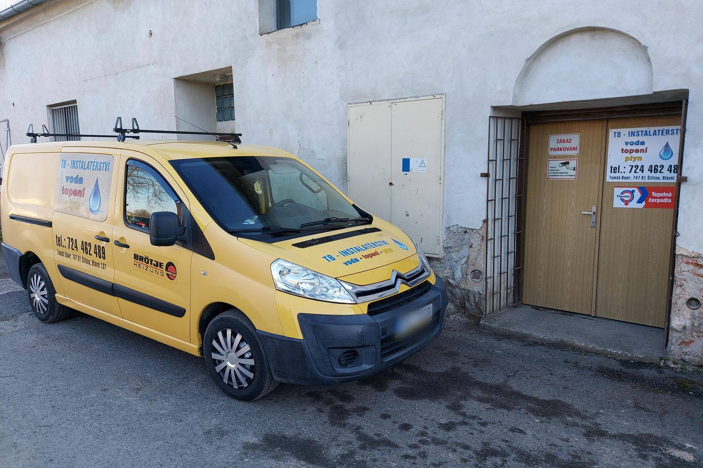
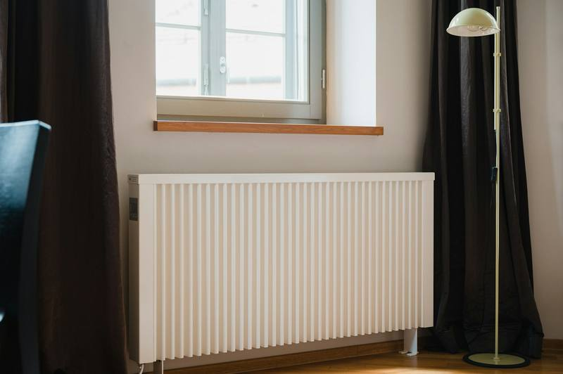
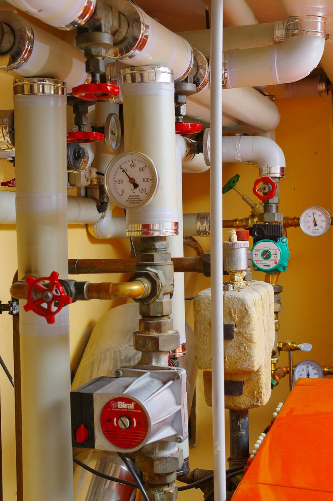
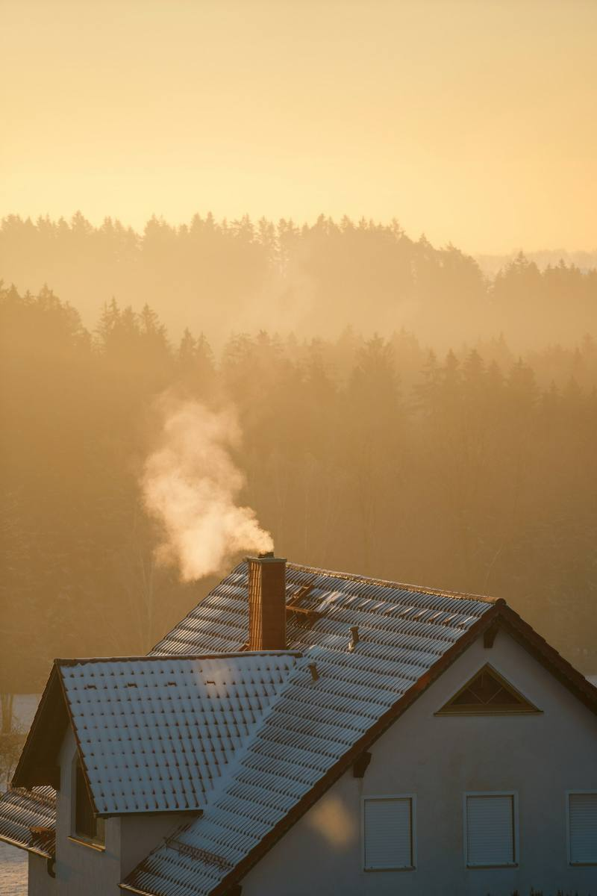
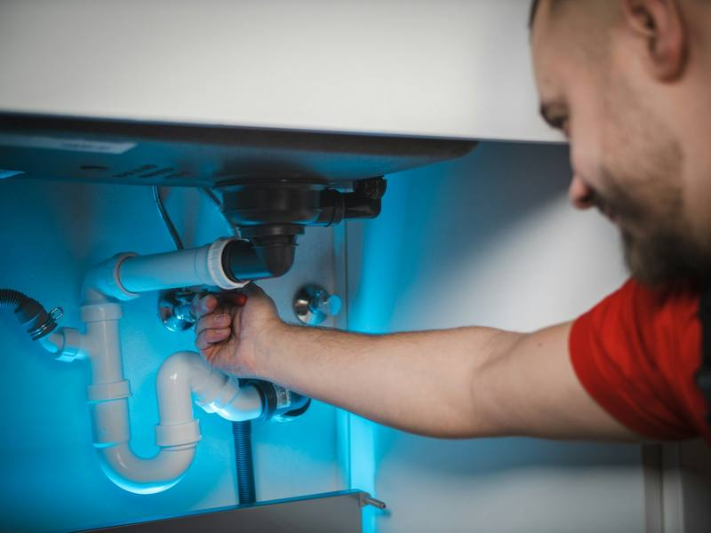

Voda, topení,plyn
Instalatér, topenář a plynař Tomáš Baar ze Štítiny u Opavy. Montáž kotlů a tepelných čerpadel, servis kotlů BRÖTJE a revize komínů.
- 4,9 z 47 hodnocení na Firmy.cz
- Po–Pá nonstop
- Platba kartou

Co pro Vás uděláme
Od výměny bojleru po nový kotel nebo tepelné čerpadlo. Kotle BRÖTJE servisujeme a revidujeme.

topeníKotle a tepelná čerpadla
Montáž plynových kotlů, kotlů na tuhá paliva a tepelných čerpadel.
Více o službě
plynServis a revize kotlů BRÖTJE
Pravidelný servis a revize plynových kotlů značky BRÖTJE.
Více o službě
plynRevize komínů
Revize kouřových cest, tedy komínů.
Více o službě
vodaVoda a bojlery
Instalatérské práce a výměna bojleru.
Více o služběKlimatizace
Montáž klimatizací.
Více o služběKdy je čas na servis?
Zadejte, kdy byl kotel naposledy na servisu nebo komín na kontrole. Uvidíte, kdy je čas na další, a připomínku si uložíte do kalendáře.
Servis kotle i kontrola komína se obvykle dělají jednou za rok.Hodnocení zákazníků
47 hodnocení
„Zákazníci chválí rychlou reakci, kvalitní práci a ochotu pomoci v nouzových situacích.“Souhrn hodnocení na Firmy.cz
Všechna hodnoceníVe čtvrtek večer odešel elektr. bojler. Našla jsem na netu číslo na p. Baara. V pátek se stavil podívat co a jak, koupil bojler nový, v sobotu dopo už jsme měli zase teplou vodu. Precizní odvedená rychlá práce i s pomocí kolegy elektrikáře.
Pan Baar je skvělý profík. Práce rychlá, čistá, profi. Vřele doporučuji.
Pan Baar odvedl rychlou a profesionální práci při výměně boileru.

Ze Štítiny, od roku 2010
Tomáš Baar, instalatér, topenář a plynař ze Štítiny. Podniká od roku 2010 a poznáte ho podle žluté dodávky. V pracovní dny je k zastižení nonstop, o víkendu po telefonické domluvě.